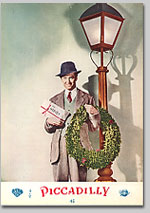
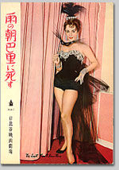
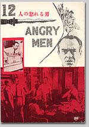

|
アメリカ映画が輝いていた頃
川本三郎
一九五〇年代から六〇年代にかけてアメリカ映画は輝いていた。
『真昼の決闘』『シェーン』『ジャイアンツ』『エデンの東』『十二人の怒れる男』……アトランダムに挙げただけでも当時の輝きがわかる。テレビの影響でかげりが見えたとはいえ、ハリウッドのメジャー映画会社はまだ“夢の工場”として健在で次々に傑作を作り出していた。
スターも輝いていた。ジェームス・スチュワート、ゲイリー・クーパー、ヘンリー・フォンダ、クラーク・ゲイブル、スペンサー・トレイシーといった戦前から活躍しているスターに加え、新しく登場したバート・ランカスター、カーク・ダグラス、そしてジェームス・ディーン。
女優たちもまさにキラ星のよう。エリザベス・テーラー、マリリン・モンロー、デボラ・カー、エヴァ・ガードナー、キム・ノヴァク、ジェニファー・ジョーンズ、ドリス・デイ、とこれも挙げていくと切りがない。
それに加えて名監督たち。アルフレッド・ヒッチコック、ウィリアム・ワイラー、ビリー・ワイルダー、ジョン・ヒューストン、エリア・カザン、ジョージ・スティーヴンス……。
彼らが作る映画が毎年のように公開されていたのだから、まさに映画の黄金時代だった。

『ハーヴェイ』50年（日本公開52年２月）
監督：ヘンリー・コスター、主演：ジェームス・スチュワート
私の十代はこの黄金時代に重なっている。ひとりで映画館に行けるようになったのは、一九五七年、中学生になってからだが、そのころの東京には、映画館がどの町にもあった。
しかもロードショー館だけでなく、二番館、三番館、さらに名画座と多様化され、“映画がいっぱい”の環境だった。
そのころから私の映画館通いが始まった。当時、中央線の阿佐谷に住んでいたが、そこには阿佐ヶ谷オデヲン座という洋画の三番館があって、毎週、豪華な（！）二本立て、三本立てを組んだ。
いま手元にあるオデヲン座の劇場チラシを見ると、エリザベス・テーラーの『愛情の花咲く樹』とラナ・ターナーの『青春物語』、ヘンリー・フォンダの『ワーロック』とグレゴリー・ペックの『勝利なき戦い』、スペンサー・トレイシーの『老人と海』とイタリア映画『鉄道員』といった番組である。
いま東京の名画座でこんな映画を上映していたら、すぐにでも飛んで行きたい。
このオデヲン座は私の家から歩いて五分のところにあった。中学、高校の六年間、毎週のように通った。私にとってここが“映画の学校”になった。
当時のアメリカ映画はひとことでいえば、大人の観客を想定した大人の映画である。子ども向きの映画はディズニーを除いてほとんどなかった。現代の、低年齢化した観客に合わせた“お子様ランチ”とは違う。
十代の映画ファンは、大人の映画を背伸びして見た。わからなくてもともかく背伸びすることが大事だった。大人の仲間入りをした気分になった。

『雨の朝巴里に死す』54年（日本公開55年４月）
監督：リチャード・ブルックス、主演：エリザベス・テーラー
映画を見たときには劇場プログラムを買うのが楽しみだった。とくにロードショー館で見たときは「東劇」「松竹セントラル」「日比谷映画劇場」「新宿ミラノ座」と劇場名の入ったプログラムを買うのが誇らしかった。
ビデオなど考えられもしなかった時代、劇場プログラムは、写真、ストーリー、解説、映画評、スターと監督の紹介と情報が多く貴重だった。映画館が“私の学校”とすれば、映画が“授業”で、劇場プログラムは“教科書”だった。
そのころ買い求めたプログラムは私の宝物である。それを使って、“黄金時代のアメリカ映画”のことを語る。そうして出来あがったのが『ロードショーが150円だった頃』である。
幸い現在、大半の映画がビデオ化されている。それを見ながら、十代のころのことをいろいろ思い出して書く。先述したように、当時は背伸びして見ていたから、わからないことがたくさんあった。大人になったいま見るとこういうことだったのかという発見がある。それが楽しかった。

『十二人の怒れる男』57年（日本公開59年８月）
監督：シドニー・ルメット、主演：ヘンリー・フォンダ
西部劇をたくさん取り上げている。五〇年代には、ジョン・スタージェスやアンソニー・マンのような秀でた西部劇の監督がいた。いま彼らが忘れられているのは残念である。
また五〇年代に活躍したエドワード・ドミトリク監督や、スターでいえばグレン・フォード、ドリス・デイの映画も忘れてはならない。オードリー・ヘプバーン人気の陰に隠れてしまったが、エリザベス・テーラーのことも忘れては困る。
さらには映画史に残る傑作ではないが『大アマゾンの半魚人』や『東京暗黒街・竹の家』のようなマイナーな映画。
若い人たちに、この本を通して、当時のアメリカ映画の面白さがわかってもらえればうれしいし、年輩の映画ファンには、往年の名作を懐しんで欲しい。
著者について
川本三郎（かわもと・さぶろう）
1944年東京生まれ。映画・文学・都市を中心に評論活動を続ける。『大正幻影』（ちくま文庫）でサントリー学芸賞、『荷風と東京』（都市出版）で読売文学賞を受賞。近著に『この映画見た？』（新書館）『君美わしく』（文春文庫）『クレジットタイトルは最後まで』（中公文庫）『映画の昭和雑貨店』（小学館）など。
|